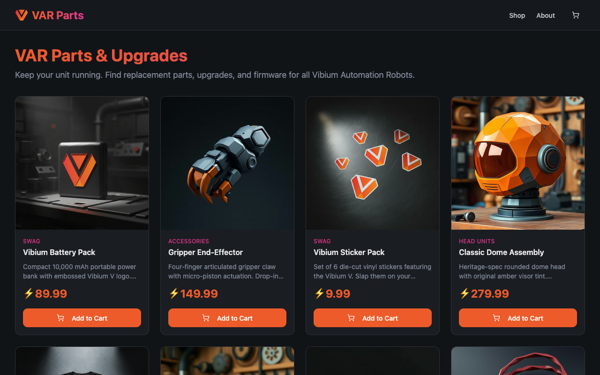
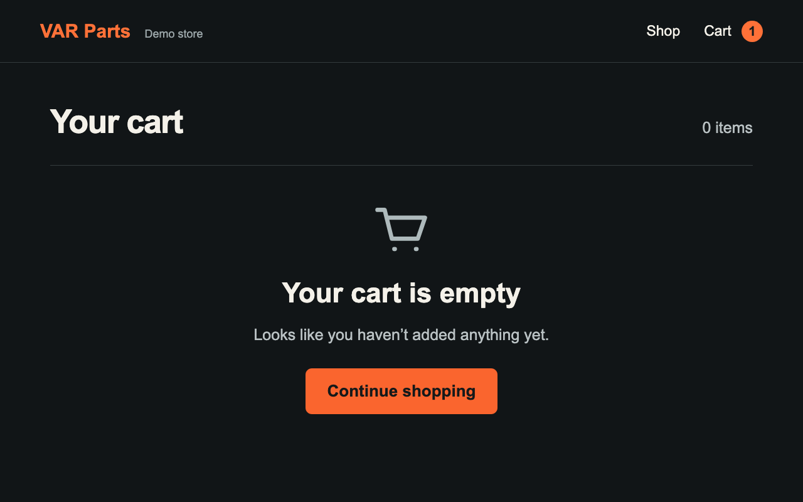
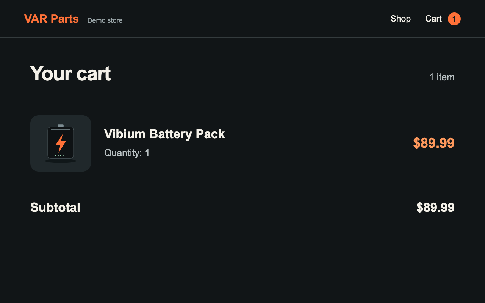
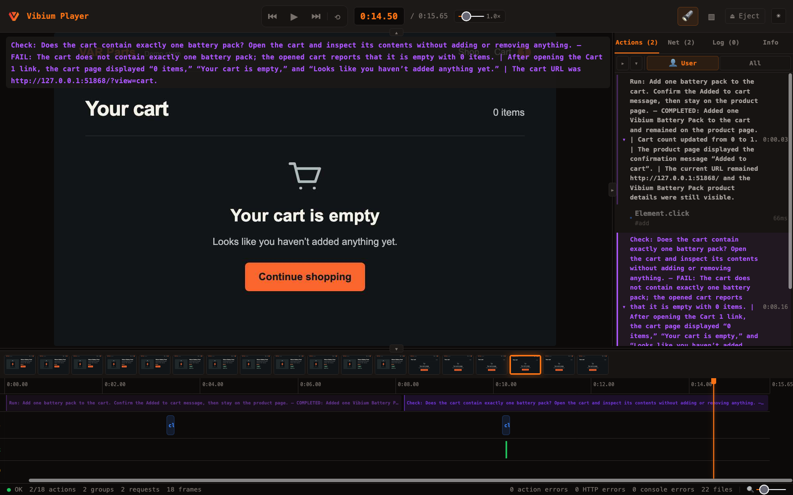

vibe.check()
Independent verification for coding agents
Is GitHub down?
vibium check "https://github.com is down"Check asks a question.
vibium check \
"Does the cart contain exactly one battery pack?"PASS / FAIL / INCONCLUSIVE
Check looks for evidence.
A second set of eyes
Same model, new context window.
Or a different model.
Doesn’t see the coding agent’s chat.
Uses your open browser
Sees the page as it is now.
Run does a thing.
vibium run \
"Open https://var.parts and add one battery pack to the cart" \
--keep-openCOMPLETED / NOT_COMPLETED
How Check answers your question
- Vibium sends your question and page details to the model.
- The model requests browser actions or more information.
- Vibium carries out those requests and sends back results.
- The model returns a verdict with evidence.
Getting ready
npm install -g vibium
source ~/.config/vibium/ai.env
vibium readyYour first Check
vibium check \
"https://var.parts is up"vibium check \
-o sitecheck.zip \
"https://var.parts is up"
Add it. Then check the cart.
vibium record start -o flow.zip
vibium run "Add one battery pack to the cart"
vibium check "Does the cart contain exactly one battery pack?"
vibium record stopAdded. But the cart is empty.

Run: COMPLETED
Check: FAIL
Evidence behind the FAIL
“Your cart is empty”
After the fix: PASS

One battery pack.
In the cart.
The recording shows the work.

Check a recording or trace.
vibium check \
"Did the recorded cart contain exactly one battery pack?" \
-i flow.zip \
--report verdict.jsonEvidence from that run. No browser replay.
In the development loop
Build
Run
Check
Review
“Use Vibium. Check that the cart really contains one battery pack.
Save the recording and show me the evidence.”
Run. Check. Review.
Run
Do a browser task.
Check
Answer a question with evidence.
Review
Inspect the recording and evidence.
Automation reads the verdict.
vibium check \
"Does the cart contain exactly one battery pack?" \
--json | jq -e '.result.status == "passed"'A completed Check can return FAIL.
Choose the model per call.
vibium check "Does the cart contain exactly one battery pack?" \
--provider openai \
--model gpt-5.6-sol \
--reasoning-effort noneCheck can still be wrong.
Keep deterministic tests.
Review the evidence.
Use test data with your chosen provider.
vibe.check()
CLI
vibium check "<question>"MCP
vibium_checkSDKs
vibe.check(question)JavaScript / TypeScript · Python · Java